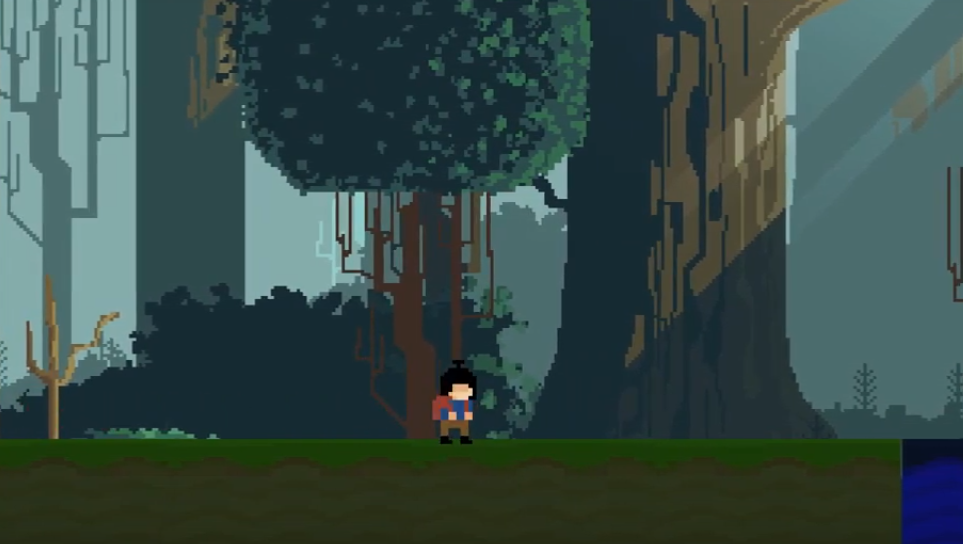

Jonathan
Girón Rodríguez
jonathan.giron@uao.edu.co
jonathan.giron@uao.edu.co
Videojuego de tipo plataforma/metroidvania, que te coloca en los zapatos de Ren un niño que en su busqueda de su abuelo se adentra en un bosque fantastico, donde miles de obstaculos y villanos se toparan con el para detener su camino de encontrar a su familiar.
Catálogo virtual de peliculas para la Biblioteca Departamental, haciendo más efectivo el proceso de la prestación del servicio de peliculas y a su vez proporcionando experiencia en el uso de los sistemas basados en web.

Video interactivo que tiene como propósito apoyar el estudio independiente de los estudiantes de Ingeniería de Empresa, con contenidos de tipos de camiones y algunos juegos interactivos en web.